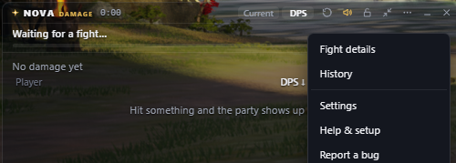
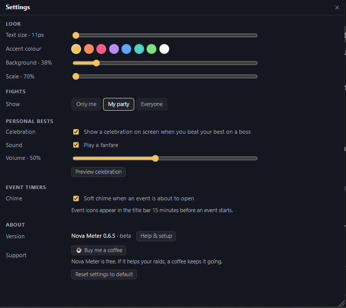

Know who's really carrying the pull.
Nova Meter watches the game's network traffic and turns it into a live party breakdown: who did the damage, who kept everyone alive, and what killed you.
The real overlay running a simulated boss fight. Click rDPS to cycle DPS, rDPS, nDPS and HPS, or ⋯ for fight details, history and settings.
Support players will show up in the numbers
When a Chanter's Blessing of Wind adds damage to your hit, rDPS moves that slice onto the Chanter's row. The party total stays the same, so everyone's share still adds up to 100%. Healing on other players is drawn after it in green, so a healer's bar shows everything they did.
The overlay already has the rDPS view. Buff credit fills in once the game's buff messages are decoded. Until then, rDPS matches DPS.
Built for the middle of a pull
The overlay keeps out of the way while you fight. Everything else is there afterwards, when you want to work out what went wrong.
Four ways to count
DPS, rDPS, nDPS (your damage without other people's buffs) and HPS. One click switches. Buff credit for rDPS is still being decoded.
Boss HP, time to kill and enrage
HP left and time to kill written in the boss bar. On bosses that enrage, a ghost bar shows whether you'll beat the enrage timer and how much more DPS you need. The timers are built in, so there's nothing to set up.
You against your best
Your row shows how far ahead or behind your best kill on that boss you are, at the same point in the fight.
Death recaps
Click the skull on anyone's row to see the last six seconds of hits before they died, with their HP after each one.
Event timers
Spacetime Rift, Shugo Festival, Beritra Air Raid, Arena of Tactics and the daily reset sit in the header. They glow before opening, with an optional chime.
Field boss timers
Open your map in game and every field boss on it shows up, with its portrait: who's up (and their HP) and the exact respawn time of the rest, straight from the game, so maintenance and kills are already in it.
Your reminders, over the game
Click the bell on any boss or event and pick when: on spawn, 5, 15, 30 minutes before, or several. A banner with a chime pops up at the top of your screen in game. Post a live timer board to your guild's Discord too.
Connection warnings
If ping, jitter or packet loss goes bad and stays bad, a small chip in the footer tells you in plain words.
Make it yours
Text size, eight accent colours, background opacity and scale. Lock it and your clicks go straight through to the game.
Fight details
Every skill with hits, crit rate and max hit, and a damage chart with your best pull behind it.
History
Every fight saves itself on your PC, with the boss, whether you killed it and who died. Copy a summary straight into game chat.
Expeditions
Each dungeon visit becomes one run: clear time, deaths and every boss, with the difficulty worked out automatically (Conquest, Exploration, Transcendence stage) and your fastest clear marked.
Nova Rating
Every boss parse rated 0 to 100 against your class on that exact boss, adjusted to your Combat Power. 50 is typical and 95 is the top 5%. The rating is saved with the fight, so it never changes later.
Every skill named
Skill names and icons for all nine classes, Brawler included. Everything a player's summons did is collected on one line.
Share a fight
Send your party a link to the full report instead of a screenshot.
Player lookup
Check someone's clears and how their rotation compares before you invite them.
In the game
The overlay sits over Aion 2 with a see-through background. Everything else is one click away in the menu.


Why the numbers agree
Packets can arrive late, twice or out of order. A meter that counts them as they come will count a resent packet twice and miss a late one. Nova Meter puts the stream back in order before reading a single number, and the footer shows the capture health if you want to check.
Read-only, by design
The meter only copies packets the game already sent to your PC. It never writes to the game, never touches its memory or files, and never sends anything to the game servers.
Up and running in a few minutes
Install Npcap
The free capture driver the meter reads through, from npcap.com. Leave the admin-only box unticked.
Install Nova Meter
Run the installer. Windows may warn that the app is unrecognised because it isn't code-signed yet: click More info, then Run anyway. Start the meter before you log in to the game, so everyone in your party shows up by name.
Play
The overlay fills in as you fight. Ctrl+Shift+L locks it so clicks go through to the game, and Ctrl+Shift+H hides it. Updates install themselves.
FAQ
What does it do to the game?
Nothing. It reads a copy of the traffic your PC already receives. No injection, no memory reading, no changes to game files.
Do I need administrator rights?
No, as long as Npcap is installed without the admin-only option.
Does it work with ExitLag or a VPN?
Usually, yes. Some routing tools change how traffic reaches your PC. If the overlay stays empty, the footer explains what it's seeing.
What gets uploaded, and who can see it?
Nothing. Your fight history stays on your own PC. Discord sign-in for shared reports and rankings is coming later, and it will only upload anything if you sign in. See the privacy page.
Windows says it "protected your PC". Is that safe?
That warning appears for any app that isn't code-signed yet. Click More info, then Run anyway. The installer is published on GitHub.
How do updates work?
The meter checks for a new version shortly after it starts and every few hours. When one is ready, the footer shows Update · restart. Click it whenever you're out of combat.
The overlay is empty. What now?
Make sure Npcap is installed and that the meter was started before you logged in. The footer shows what the meter can see. If you still get nothing, ask in Discord.
Is it free?
Yes.